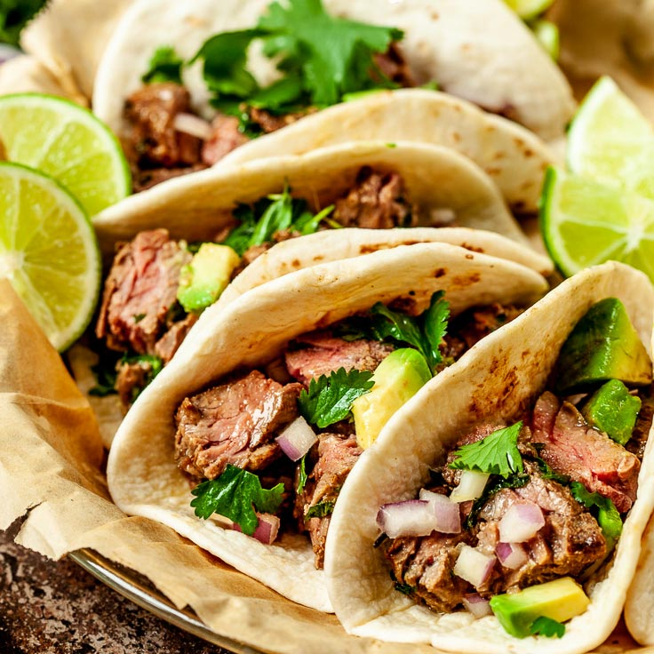

Carne Asada Tacos

Description
Tasty tacos filled with Carne Asada (Grilled Steak) and complimenting
toppings.
Ingredients
- Carne Asada: Skirt steak works for this
- Corn Tortillas: fresh made from a local torilleria or pre-packaged
- 1 bundle of Cilantro: diced
- 1 Onion: thinly sliced
- Avocado: Commonly known as "Oro Verde
Steps
- Grill steak for apprx 5 minutes on each side
- while the meat is grilling, satue onions on lard until golden brown
- heat up torillas on grill for a minute on each side
- bring it all together and enjoy